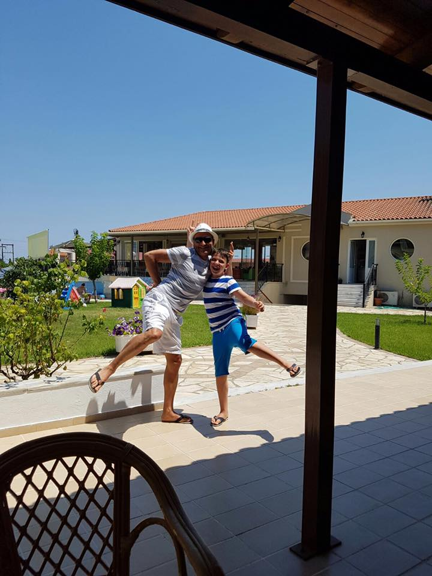
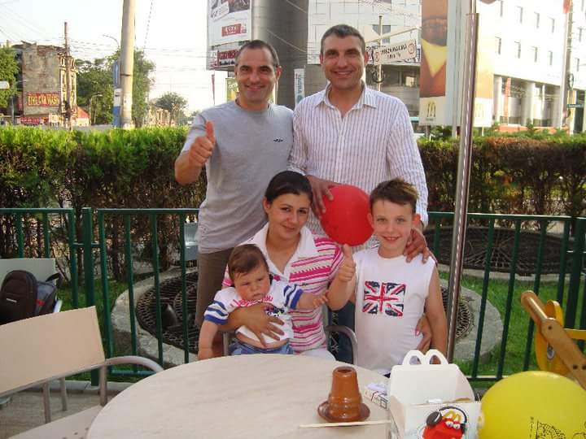
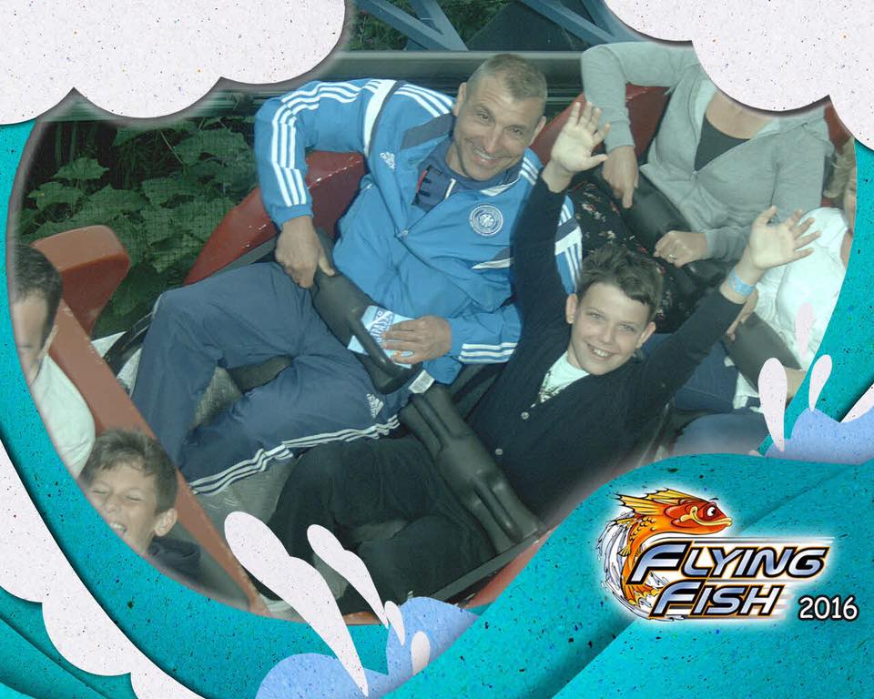
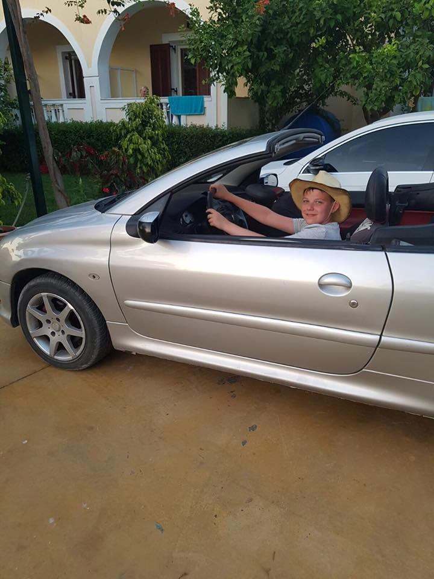

Hello there. My name is Vlad and I'm currently writing about my life. Nice to meet you, fellow human! ━━━━━━━━━▲━━━━━━━━━I was born in Iasi, Romaina on the 7th of March 2005, growing up, my parents were very rich. Some say I was the luckiest child in the town beause I had a room full of toys.

Zantos, Zakynthos | 2016
My Dad and I the first time we arrived at the hotel. We were very excited.

Iasi, Romainia | 2011
This is a picture in Iasi, Romania outside a popular McDonalds. I met with my uncle, my auntie and my cousin the first time in about a year. They live in Kuwait so I don't get to see them a lot.

Thorpe Park | 2016
This picture highlights the good time my Dad and I had at Thorpe Park 2016, we went on a lot of rides and ate a lot too. I was scared in the beginning but it wasn't too scary.

Zantos, Zakynthos | 2016
This was in Zantos, where they have the best Salmon and Rice I've ever tasted. It's one of the most beautiful countries I have been to, there are many things to do, like AquaParks, Shops and Volcanoes.